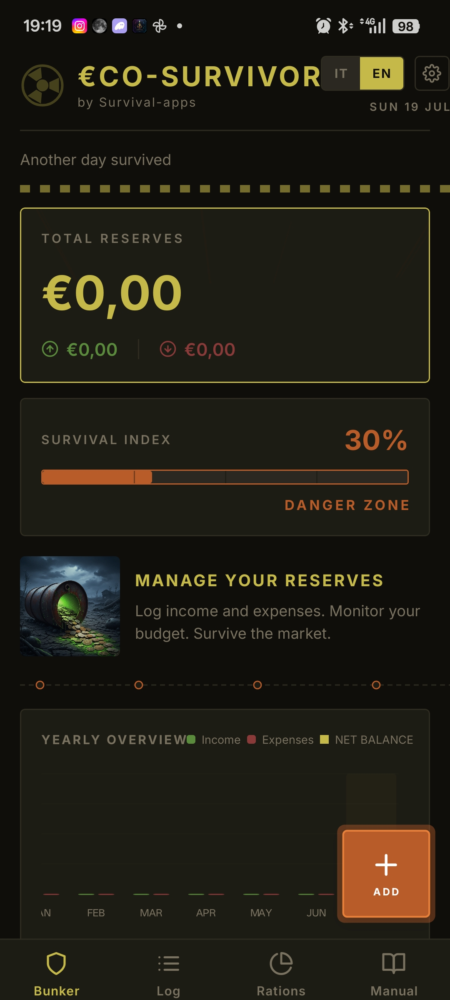
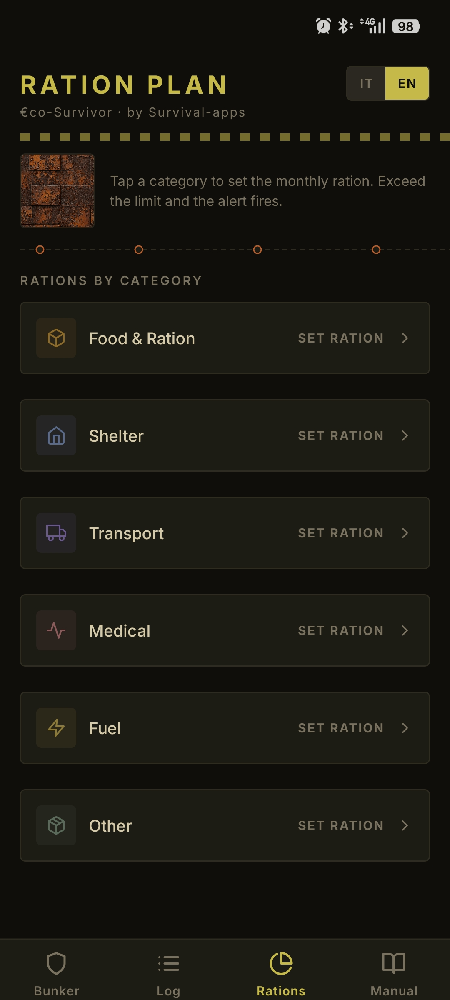
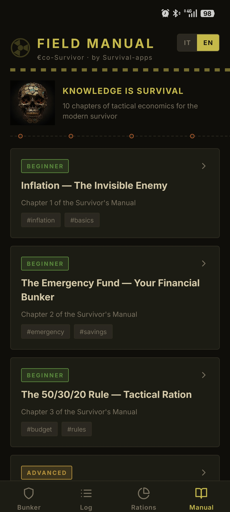

EcoSurvivor treats your personal budget like a bunker's supplies: income and expenses become reserves, category budgets become rations, and a survival index tells you in one number how long you'd last at your current pace.
In 1904, Hani Motoko — the first woman to work as a journalist in Japan — published a household accounting method for families: the kakebo (家計簿, kakeibo), literally "household account book". Not a technical invention — a discipline: a notebook, a pen, half an hour at the start of the month to set income and a savings goal, and daily logging of every expense across four categories — necessities, culture and personal growth, leisure and extras, unexpected costs. At month's end, a written reflection: what went well, what to change.
The kakebo's principle is almost philosophical before it's financial: writing by hand slows you down, and slowing down forces you to look. Over a century later, the method is still taught and practiced, well beyond Japan.



32103e7fe3569b872e595e3a1f6d65ef79612ffef7469b36a4462da195c9fe44